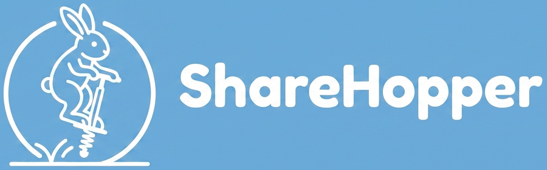
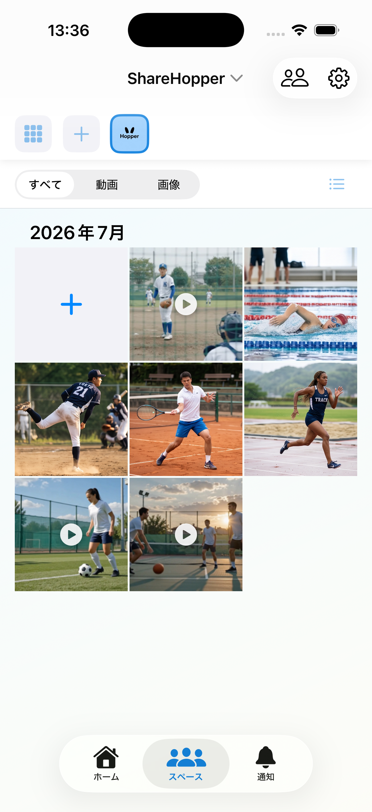
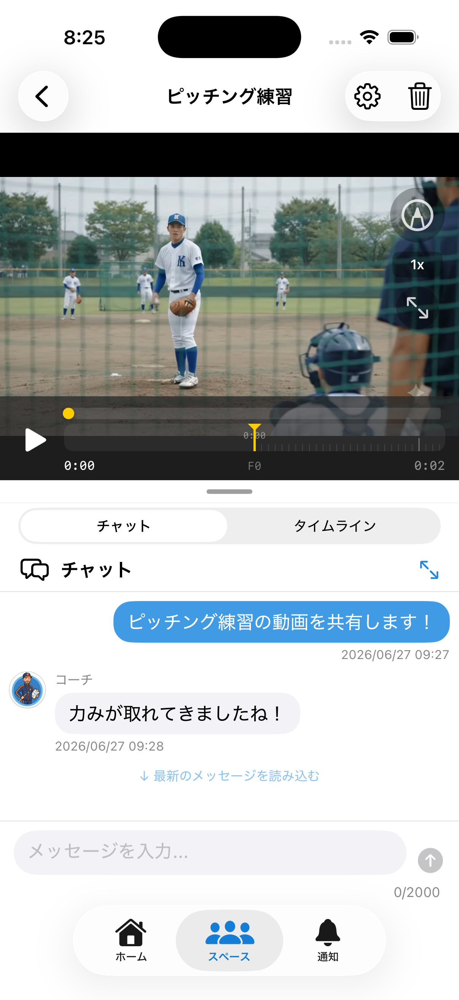

言葉だけでは、
伝わりにくい。
動きのコツや改善点を、その場でうまく伝えられないことがあります。

Share Hopperアプリを入手 →FOR EVERY GROWING MOMENT
動画を見ながら、気づきを伝え、いっしょに振り返る。
Share Hopperは、毎日のスポーツを成長の記録に変えるアプリです。
iPhoneでご利用いただけます
動画があるから、伝わる。見返せるから、伸びていく。
A SMALL GAP, A BIG DIFFERENCE
動きのコツや改善点を、その場でうまく伝えられないことがあります。
日々の練習動画がカメラロールに埋もれ、振り返るきっかけを失いがちです。
家族や仲間、指導者と同じ場面を見ながら、あたたかく言葉を交わしたい。
WHAT SHARE HOPPER DOES
Share Hopperなら、映像をただ保存するだけでなく、気づきや応援の言葉まで一緒に残せます。

動画を止めて、線や図形を直接書き込み。感覚だけでは伝えにくいフォームや動きを、同じ画面を見ながら共有できます。
タイムライン上の好きな位置にコメントを投稿。気になった一瞬と気づきが結びつくから、あとで見返しても伝わります。
招待した人だけが参加できるスペースで、動画やコメントを共有。大切な記録を、信頼できる仲間と育てていけます。

HOW IT WORKS
練習や試合の、今しかない一瞬を撮影。
動画をスペースに投稿して、みんなで見られるように。
書き込みやコメントで、気づきとエールを届ける。
過去の記録と比べながら、小さな成長を見つける。
TO THE PEOPLE WHO CHEER
選手、保護者、仲間、指導者。立場は違っても、見守りたい気持ちは同じです。Share Hopperは、応援する人たちを動画でつなぎます。
START YOUR STORY
さあ、成長のアルバムをはじめよう。